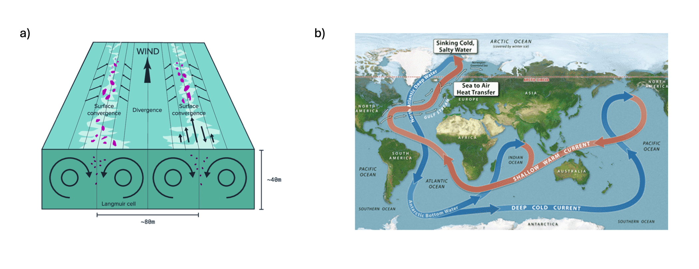
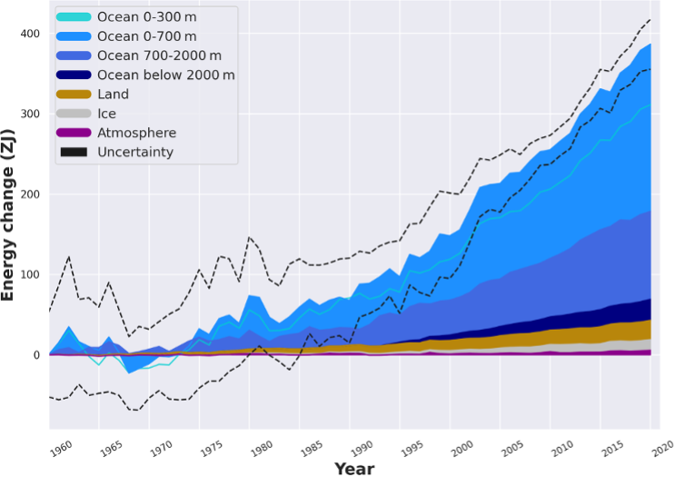
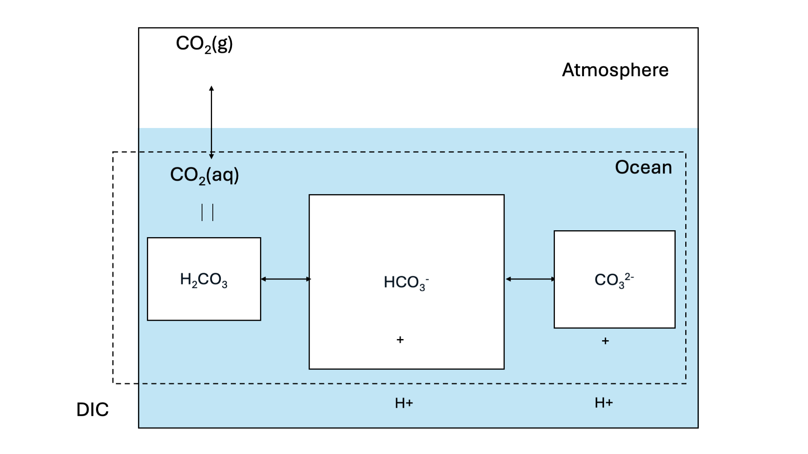
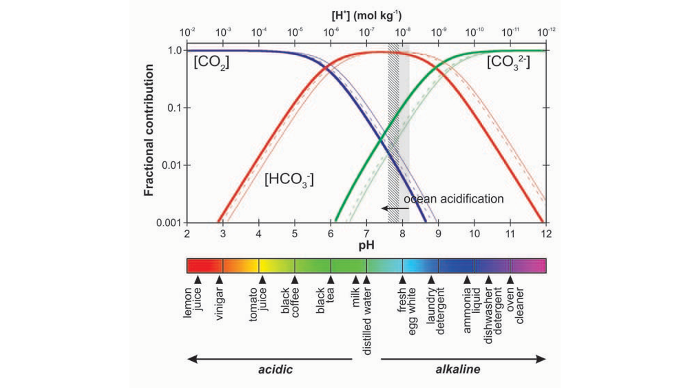
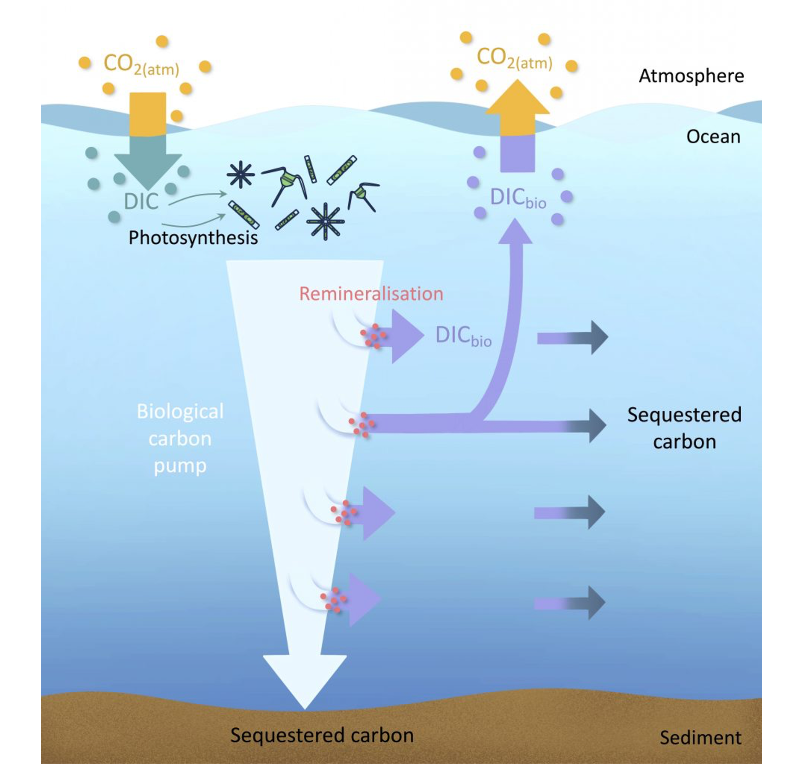
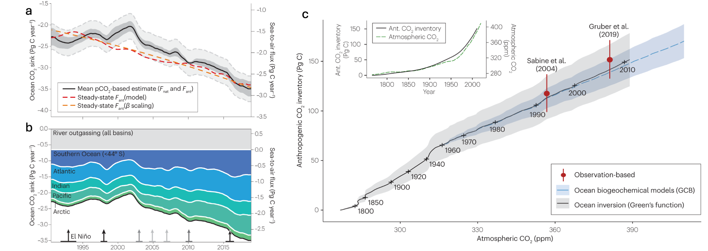
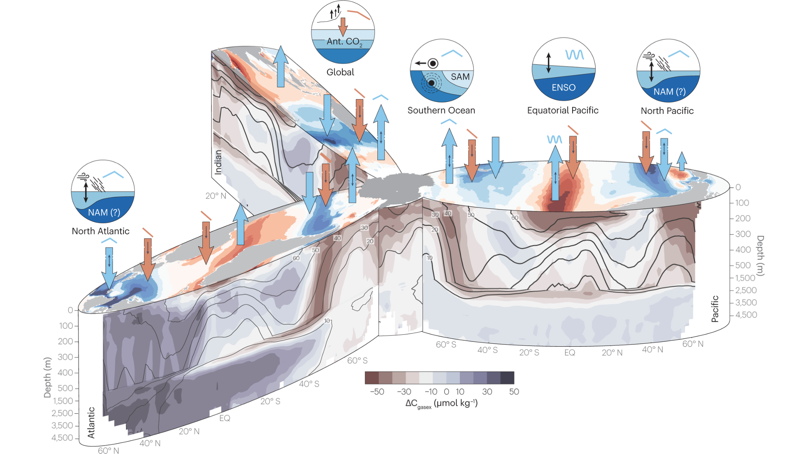

14 The Ocean and its CO2 uptake
14.1 Ocean Role in the Climate System
The ocean constitutes of around 70 % of the Earth’s surface and plays a vital role in the climate system through its large storage of heat and carbon (Talley et al. 2011a). Since the preindustrial time period, the ocean has stored over 90 % of excess anthropogenic heat. It also has taken up 22 % of global anthropogenic carbon emissions (Friedlingstein et al. 2024). Both of characteristics mean that increasing atmospheric CO2 concentrations and climate warming would be much more severe without the role of the ocean in the climate system.
In addition to this, the ocean serves as a habitat for marine species, and is important for human socioeconomic activities. Climate warming and other human-caused disruptions, such as eutrophication, are affecting this vital space on Earth, and endangering species such as corals.
14.2 Ocean Circulation
The circulation of the ocean plays a large role for transports of heat and carbon between latitudes, but also from surface to deeper ocean. The ocean is generally well stratified, meaning that the exchange between surface and deeper ocean is limited, thus also constraining the amount of heat and carbon that can reach the deeper ocean and be stored in this large volume. However, areas where surface waters are mixed into the deeper ocean are found in the North Atlantic and Southern Ocean. Ocean circulation in the surface ocean is largely driven by winds (Figure 14.1 a), whereas slower, long-term circulation in the deeper ocean is driven by density differences within the ocean (Figure 14.1 b). This slow circulation with a timescale of over one thousand years is referred to as thermohaline circulation, and it constitutes of both flows at the surface (for instance the Gulf Stream), which convects into the deeper ocean in both Atlantic and Southern Ocean (Figure 14.1 b).
14.3 Ocean Heat Uptake
The ocean has taken up hundreds of ZJ of heat since the preindustrial time period as a result of the increasing Earth energy imbalance caused by greenhouse gas emissions (Figure 14.2). The large potential for heat storage is due to the physical characteristics of water and storage volume. For instance, its large heat capacity (Cp = 4’184 J kg-1 °C-1) allows for stronger storage of heat at a given temperature than all other liquids and solids (except NH3). Heat is taken up through air-sea exchange at the ocean’s surface, thus being the largest storage term of anthropogenic heat, but part of it is also transferred to the voluminous deeper ocean, where it is stored over the long-term due to very slow circulation at greater depths. This heat in the deep ocean remains isolated from any contact with the atmosphere for centuries. Due to expansion of water with increasing temperature, the large ocean heat uptake is responsible for around half of historical changes in sea level. Increases in temperature also can have adverse effects on marine organisms, such as corals.

14.4 Ocean Carbon Fluxes
Carbon fluxes between ocean and the atmosphere, and thus the dissolution of atmospheric CO2 into seawater, is heavily driven by two distinct processes pathways: carbonate chemistry and the biological fluxes. The former comprises of the chemical balance of inorganic carbon in seawater, whereas the latter is driven by uptake of carbon via photosynthesis and the degradation (remineralization) of this organic matter in the ocean. Both are greatly important for natural carbon fluxes in the ocean, but the uptake of anthropogenic CO2 is dominated by the solubility pump that is driven by carbonate chemistry.
14.4.1 Carbonate chemistry (Solubility Pump)
Carbonate chemistry is a major driver of carbon storage in the ocean and the dominant pathway of anthropogenic CO2 uptake by the ocean through its “Solubility Pump” Figure 14.3.

Firstly, gaseous CO2 in the atmosphere can dissolve into seawater. This process is driven through the equilibrium states of gaseous CO2 and dissolved CO2 concentration in sea water. The equilibrium of gaseous CO2 in the atmosphere and dissolved CO2 in seawater is dictated by Henry’s law:
\[ \begin{align} \frac{CO_{2,(aq)}}{pCO_{2}} \Leftrightarrow K_{H} \end{align} \tag{14.1}\]
Applying only Henry’s law with KH = 3.4 × 10−2 and pCO2 = 400 ppm would however lead to a 100-fold underestimation of carbon storage in the ocean. This is because of the buffer effect caused by the carbonate system. Dissolved CO2 and water firstly form H2CO3. At sea water pH levels however, the majority of newly formed H2CO3 dissociates to bicarbonate HCO3-:
\[ \begin{align} CO_{2} + H_{2}O \Leftrightarrow H_{2}CO_{3} \end{align} \tag{14.2}\]
\[ \begin{align} H_{2}CO_{3} \Leftrightarrow HCO_{3}^{-} + H^{+} \end{align} \tag{14.3}\]
This reaction is very favorable at oceanic pH levels with a pKa of 3. The bicarbonate can further dissociate to CO32-:
\[ \begin{align} HCO_{3}^{-} \Leftrightarrow CO_{3}^{2-} + H^{+} \end{align} \tag{14.4}\]
Although this reaction is not favorable at oceanic pH levels at a pKa of 10.3. The sum of all carbonate species (CO2(aq), H2CO3, HCO3-, CO32-) comprises dissolved inorganic carbon (DIC). Figure 14.4 shows the fraction of the different DIC species to the total DIC as a function of solute pH. The figure shows that at a pH level typical for seawater (around pH=8.2), the majority of DIC is present under the form of HCO3-. This means that with higher atmospheric CO2, the increased CO2(aq) will quickly react to form HCO3-, allowing for more atmospheric CO2 to be dissolved in the water. The mechanism is referred to as carbonate buffering.

A byproduct of equations Equation 14.2 and Equation 14.3 is the increase of seawater hydrogen ions (H+) concentrations are increased, which is referred to as acidification. Acidification is notable to reduce rates of CO2 uptake due to reducing the carbonate buffer of the ocean, and have adverse effects on organisms such as corals.
Generally, the buffering capacity of the ocean through carbonate chemistry is referred to as carbonate alkalinity. While alkalinity in general is the sum of bases minus acids in a solution, carbonate alkalinity (Ac) can be reduced to:
\[ \begin{align} A_{c} = HCO_{3}^{-} + CO_{3}^{2-} + OH^{-} - H^{+} \end{align} \tag{14.5}\]
Higher alkalinity means that the ocean can better compensate for an increase of H+.
The carbonate system is firstly affected by temperature, which pushes the speciation equilibrium of Figure 14.4 to the left, meaning that less CO2 can be stored in seawater with higher temperatures. In addition, Figure 14.4 also directly shows that a lower pH, meaning higher acidification, the buffer capacity of the ocean is reduced, reducing its potential to take up CO2.
14.4.2 Biological Fluxes (Biological Pump)
Algae in the ocean takes up dissolved carbon in the ocean through photosynthesis. In the photosynthesis process, organic carbon is produced by algae, using water and dissolved CO2 from the sea water. The produced biomass can in turn be respired during maintenance or autotrophic repiration of the algae, or after excretion or mortality, by zooplankton or bacteria, and returned to the ocean as dissolved inorganic carbon (remineralization, Figure 14.5). Carbon stored through the biological production of organic carbon is generally only lost from exchange with the atmosphere once the organic carbon particles sink to deeper depths, where waters are not mixed with the surface any longer . This sinking of the carbon is isolated from exchange with atmosphere over long timescales of thermohaline circulation, and can even be deposited and buried in the sediment. The loss of carbon from the atmosphere through this chain of biological processes is referred to as the “biological pump”.

Biological productivity in the ocean is strongly limited by light availability and nutrient concentrations. As a result, biological productivity is only found in the euphotic zone of the ocean, which is defined as depths to which light penetrates into the ocean and usually reaches around 100 m depth. Spatial patterns of productivity in the ocean show a large degree of seasonality due to the light limitation. However, “deserts” of biological productivity can be found in multiple areas of the ocean, which then owes to lack of nutrient supply. For instance, subtropical areas remain extremely low in productivity all year around due to low nutrient availability. In contrast, coastal areas where deeper waters supply vast amounts of nutrients (e.g. Californian coast, around the Canary islands, coast of Peru and Namibia) are some of the most biologically active areas in the ocean.
Past and future changes in the biological drawdown and storage of carbon in the ocean remains strongly uncertain, despite it’s large natural fluxes. While models generally agree that the biological productivity will decrease with additional climate warming, the magnitude of this decrease is strongly variable.
14.5 Ocean Carbon Uptake
The ocean is responsible for around 25 % (2.7 Pg C yr-1) of anthropogenic carbon uptake. This carbon sink has steadily increased over time with atmospheric CO2 concentrations, the primary driver of this increasing carbon flux to the ocean. Historical model and inversion data show minor saturation of the carbon sink can be observed over the historical time period (Gruber et al. (2023)), which could owe to impacts of increasing temperature and acidification on the sink driven by carbonate chemistry. Figure Figure 14.7 shows areas of the natural CO2 flux in different basins of the ocean (blue) and the anthropogenic perturbation of the CO2 flux (red).

Research has shown that ocean areas that contribute disproportionally to the ocean carbon sink are regions where waters are cooled by the atmosphere and which can generate very deep mixing. For instance, in the North Atlantic and Southern Ocean, surface waters can be mixed to hundreds of meters below the surface. The response of such regions to atmospheric warming, or increased stratification with icesheet melting, which could disrupt the deep mixing of these waters, could strongly disrupt the ocean storage of carbon, and is thus an important area of research.
